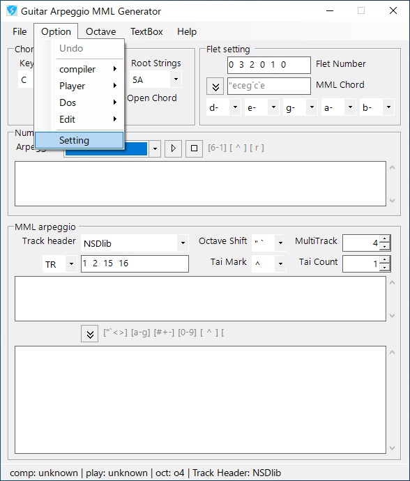
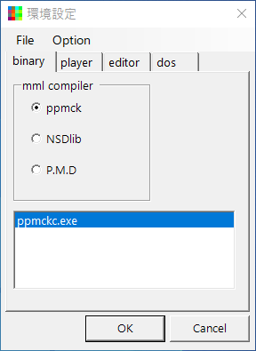
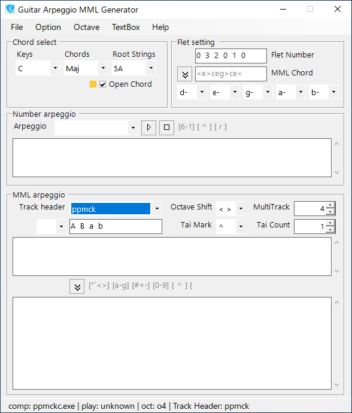
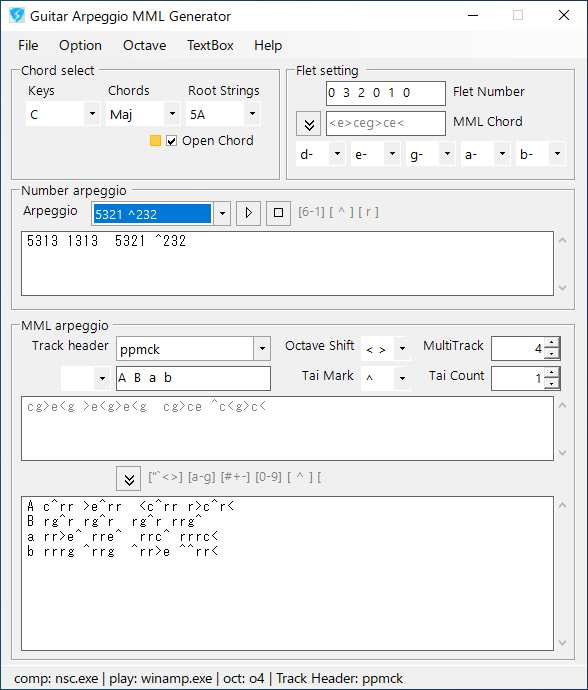
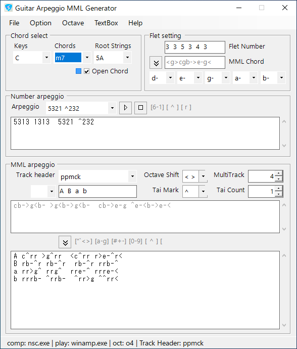

-- ppmckのケースで説明します。--
|  |
arp_gene.exeを起動します。 "Option - Setting"を選択します。 |
|  |
環境設定パネルから、 "binaryタブ"の"ラジオボタン"から、ppmckを選択、 ppmck本体の"binフォルダ"にある、"ppmckc.exe"を "リストボックス"へDrug&Dropで登録します。 (mml_watch.exeで、パス登録してある場合は選択のみ行います。) 同じく、"playerタブ"を選択、 "winamp.exe"などを登録します。 OKボタンを押し、環境設定パネルを閉じます。 |
|  |
本体パネルから、 MML arpeggioにある"Track headerロール"を、 "ppmck"へ変更します。 |
|  |
Number arpeggioの"Arpeggioロール"から、
"5313 1313"などを、選択します。 "▽再生ボタン (or Spaceキー)"を押し、音が出れば環境設定がうまくいってます。 |
|  |
Chords selectの"Chordsロール"から、
"m7"などを、選択します。 "▽再生ボタン"で確認すると、マイナーアルペジオが奏でられます。 |
|
home>
index>
quick>
Guitar Arpeggio - MML Generator |
04coreworks
|